Financial regulation exists to protect consumers, maintain systemic stability, and prevent illicit activity — yet it must do so without stifling the very innovation that delivers cheaper, faster, and more inclusive financial services. In L03 we explored the payment rails that move trillions daily. Now we examine the rules, institutions, and technologies that govern those rails. This lecture sits at the heart of the Regulation and Insurance module, bridging payment infrastructure with the compliance architecture that makes trustworthy fintech possible.
- Describe the major regulatory objectives — stability, consumer protection, competition, and innovation — and the tensions among them. [Understand]
- Explain the three stages of money laundering and the end-to-end KYC lifecycle. [Understand]
- Compare the US regulatory patchwork with unified frameworks such as the EU's MiCA and Singapore's MAS licensing. [Analyze]
- Evaluate how RegTech solutions — from NLP-driven regulatory change management to real-time transaction surveillance — reduce compliance costs. [Evaluate]
- Assess emerging trends including regulatory sandboxes, embedded compliance, and supervisory technology (SupTech). [Evaluate]
Bloom's levels covered: Understand, Analyze, Evaluate
Overview
Frames 1–4 · Opening, Learning Objectives, Bridge from L03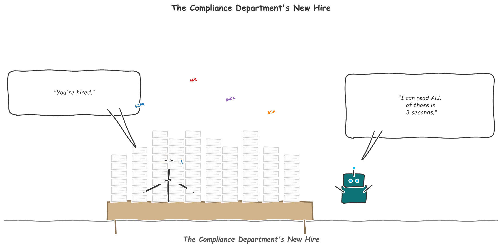
In Lecture 3 we built the infrastructure view of fintech — the payment rails, four-party model, real-time settlement, and cross-border flows that move money globally. But infrastructure without rules is a highway without speed limits: fast, efficient, and dangerously prone to abuse. This lecture turns to the regulatory architecture that governs financial technology, examining how governments, regulators, and the industry itself balance the competing demands of innovation, stability, consumer protection, and financial integrity.
Regulation is not merely a constraint on fintech — it is a design parameter. Every compliance requirement shapes product design, user experience, and business model viability. The firms that treat regulation as a feature rather than a friction consistently outperform those that view it as a burden. The rise of RegTech (regulatory technology) is itself proof: an entire industry has emerged to turn compliance from a cost center into a competitive advantage.
"In fintech, regulation is not the opposite of innovation — it is the precondition for trust. And without trust, no financial system survives."
This lecture occupies a pivotal position in the course. L01 and L02 established the foundations of fintech adoption and behavioral economics. L03 built the payment plumbing. Now L04 wraps those foundations in the legal and compliance framework that determines which innovations can scale and which will be stopped at the gate. The concepts introduced here — AML, KYC, regulatory sandboxes, RegTech — will resurface in every subsequent lecture, from blockchain and DeFi to InsurTech and AI governance.
This lecture assumes familiarity with L01 (Fintech Foundations) and L02 (Behavioral Economics and Trust). L03 (Payments) provides valuable context for understanding why regulation of payment systems matters, but is not strictly required.
Regulatory Perspectives
Frames 5–8 · Approaches, Objectives, the Regulatory TrilemmaNot all regulators think alike. The fundamental divide in fintech regulation runs between innovation-friendly approaches that prioritize experimentation and market entry, and precautionary approaches that demand rigorous licensing before any firm can touch consumer funds. Neither extreme works in isolation; the most successful regulatory regimes blend elements of both.
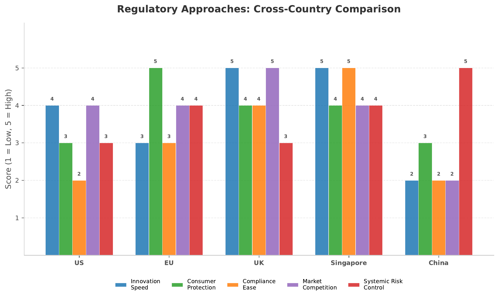
Innovation-Friendly vs. Precautionary Regulation
- Regulatory sandboxes for controlled experimentation
- Proportional licensing — lighter rules for smaller firms
- "Same activity, same risk, same regulation" principle
- Active dialogue between regulators and startups
- Examples: UK FCA, Singapore MAS, Australia ASIC
- Full licensing required before market entry
- Activity restrictions until proven safe
- High capital and reporting requirements
- Enforcement-first approach to new business models
- Examples: China (post-Ant Group), parts of US banking regulation
The Four Regulatory Objectives
Every financial regulator juggles four objectives, and the tension among them is irreducible:
- Financial stability — Preventing systemic risk, ensuring institutions can absorb losses, and maintaining confidence in the financial system. Overly strict stability rules can freeze innovation; too little can allow contagion (as the 2008 crisis demonstrated).
- Consumer protection — Ensuring transparency, fairness, and recourse. This includes disclosure requirements, suitability standards, data privacy, and protection against fraud. The challenge: protecting unsophisticated consumers without patronizing sophisticated ones.
- Competition and market integrity — Preventing monopoly, ensuring fair access to infrastructure, and maintaining level playing fields. Open banking regulations (PSD2 in the EU) are explicitly competition-promoting tools.
- Innovation facilitation — Creating space for new entrants, enabling experimentation, and avoiding rules that entrench incumbents. Sandboxes and innovation hubs serve this objective directly.
The Regulatory Trilemma
Regulators face a trilemma analogous to the classic "impossible trinity" in international economics. Of the three goals — financial stability, innovation, and consumer protection — it is extremely difficult to maximize all three simultaneously. Tightening stability requirements raises compliance costs and slows innovation. Maximizing innovation may expose consumers to untested products. Strict consumer protection can create barriers so high that only large incumbents can afford to comply, reducing competition and innovation.
The formal expression of this trade-off can be stated as a constrained optimization. Let $U$ denote social welfare, $S$ stability, $I$ innovation, and $C$ consumer protection:
$\max_{R} \; U(S, I, C) \quad \text{subject to} \quad S + I + C \leq \bar{K}$
where $R$ represents the regulatory design vector and $\bar{K}$ the finite regulatory capacity. The constraint captures the insight that regulatory attention and capacity are scarce resources — every hour spent on stability review is an hour not spent facilitating innovation.
The UK Financial Conduct Authority (FCA) launched its regulatory sandbox in 2016, becoming the global template for innovation-friendly regulation. By 2024, over 800 firms had applied across eight cohorts, with a 70% graduation rate to full authorization. The sandbox allows firms to test innovative products with real consumers under relaxed regulatory requirements, while the FCA monitors risks in real time. Key features include time-limited testing (typically 6 months), restricted customer numbers, and enhanced consumer protection safeguards. The model has been replicated in over 50 jurisdictions worldwide.
AML and KYC
Frames 9–14 · Money Laundering Stages, KYC Lifecycle, eKYC, Transaction MonitoringAnti-Money Laundering (AML) and Know Your Customer (KYC) are the twin pillars of financial crime prevention. Together, they form the compliance infrastructure that every financial institution — from global banks to two-person fintech startups — must implement. The global cost of financial crime compliance exceeded USD 274 billion in 2023, yet the United Nations estimates that only 1–2% of illicit financial flows are successfully intercepted. This gap between spending and effectiveness is precisely what RegTech aims to close.
The Three Stages of Money Laundering
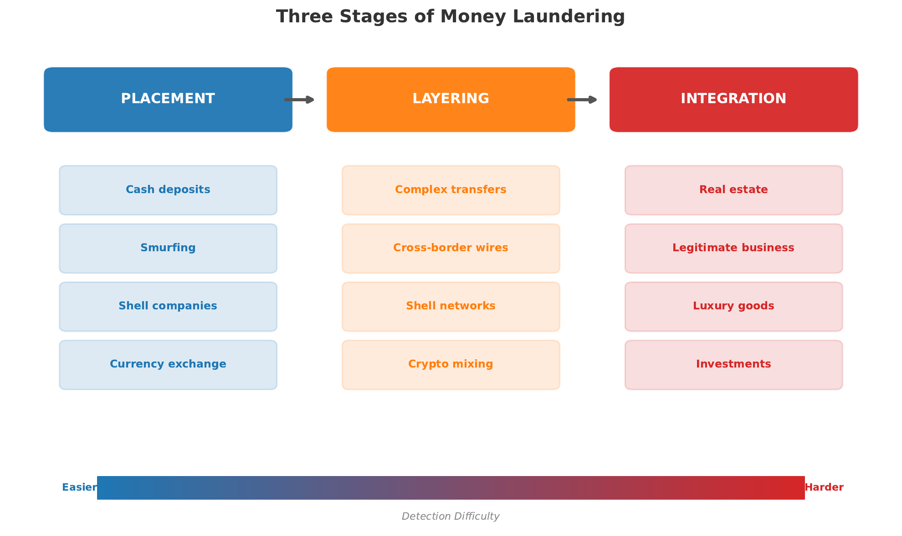
- Placement — The initial introduction of illicit funds into the financial system. This is the most vulnerable stage for criminals and the most detectable for compliance teams. Techniques include structuring (splitting large deposits into amounts below reporting thresholds, also called "smurfing"), using cash-intensive businesses (restaurants, car washes) as fronts, and exploiting informal value transfer systems (hawala networks). Fintech creates new placement vectors: prepaid cards, peer-to-peer platforms, and cryptocurrency exchanges.
- Layering — The separation of illicit funds from their source through complex layers of transactions designed to obscure the audit trail. Techniques include rapid transfers between multiple accounts (often across jurisdictions), conversion between asset types (fiat to crypto to real estate), shell company networks, and trade-based laundering (over- or under-invoicing of goods). This stage is where cross-border payment complexity from L03 becomes a criminal advantage.
- Integration — The re-entry of laundered funds into the legitimate economy as apparently clean wealth. Funds are invested in real estate, luxury goods, legitimate businesses, or financial instruments. At this point, the money is extremely difficult to distinguish from legally earned income without the upstream trail.
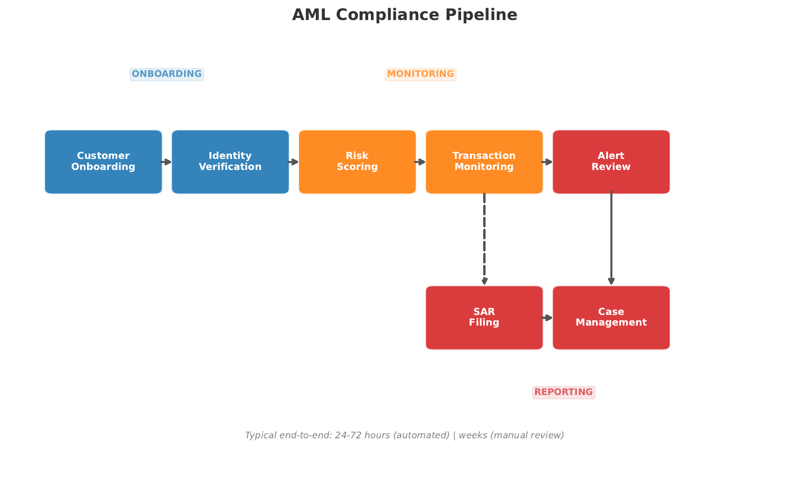
The KYC Lifecycle
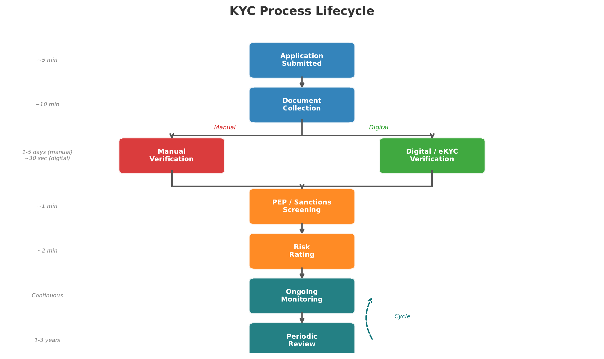
KYC is not a one-time event but an ongoing lifecycle with four key stages:
| Stage | Purpose | Key Activities |
|---|---|---|
| Identification | Establish who the customer is | Collect name, date of birth, address, ID documents; for entities: beneficial ownership structure |
| Verification | Confirm the identity is genuine | Document verification (passport, utility bill), biometric matching, database cross-referencing, liveness detection |
| Risk Assessment | Assign a risk profile | PEP (Politically Exposed Person) screening, sanctions list checks, adverse media screening, geographic risk scoring |
| Ongoing Due Diligence | Monitor for changes in risk | Transaction monitoring, periodic review, trigger-based re-assessment, SAR filing when warranted |
Digital Identity Verification: eKYC and Biometrics
eKYC (electronic Know Your Customer) has transformed onboarding from a multi-day, branch-based process into a mobile-first experience completed in minutes. The core technologies include:
- Optical Character Recognition (OCR) — Extracts data from photographed identity documents with over 99% accuracy on modern passports
- Facial biometrics — Compares a live selfie against the photo on the identity document, using deep learning models that achieve false acceptance rates below 0.01%
- Liveness detection — Distinguishes a live person from a photograph, video replay, or deepfake. Techniques include depth sensing, micro-expression analysis, and challenge-response prompts
- Database cross-referencing — Real-time checks against government registries, sanctions lists (OFAC, EU, UN), PEP databases, and adverse media feeds
Transaction monitoring systems generate enormous volumes of alerts, the vast majority of which are false positives. Industry estimates suggest that 95–98% of AML alerts are false positives, requiring manual review by compliance analysts. For a large bank processing millions of daily transactions, this translates to thousands of analyst-hours spent investigating legitimate activity. Machine learning models are beginning to reduce false positive rates by incorporating contextual features (customer behavior patterns, peer group comparisons, temporal patterns), but the regulatory requirement to err on the side of caution limits how aggressively firms can tune their models.
US Fintech Regulation
Frames 15–19 · Federal vs. State, OCC Charter, SEC/CFTC, CFPBThe United States presents the most complex regulatory environment for fintech in the developed world. Unlike jurisdictions with a single unified regulator (such as Singapore's MAS), the US employs a fragmented, multi-layered system where federal agencies, state regulators, and self-regulatory organizations each assert overlapping authority. For a fintech startup seeking to operate nationally, this patchwork creates extraordinary compliance burden — and extraordinary strategic opportunity for those who navigate it well.
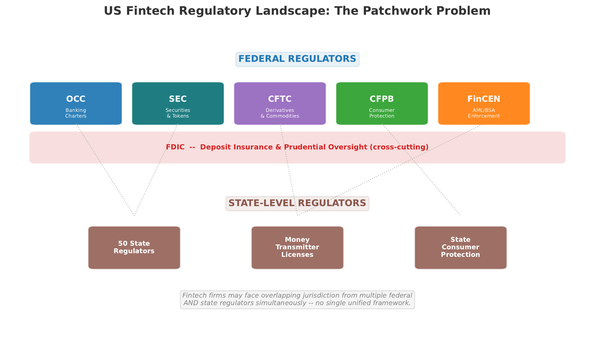
The Federal Landscape
| Regulator | Primary Jurisdiction | Fintech Relevance |
|---|---|---|
| OCC | National banks and federal savings associations | Proposed the Special Purpose National Bank (fintech) charter in 2018; enables nationwide operation without state-by-state money transmitter licenses. Challenged in courts by state regulators. |
| SEC | Securities, investment advisers, exchanges | Asserts jurisdiction over digital assets it classifies as securities (the Howey test). Regulates token offerings, crypto exchanges, and robo-advisers. The SEC-CFTC jurisdictional boundary on digital assets remains contested. |
| CFTC | Commodities and derivatives | Classifies Bitcoin and Ether as commodities. Regulates crypto derivatives, futures, and swap contracts. Has sought broader "cash market" authority over spot digital asset trading. |
| CFPB | Consumer financial products | Supervises lending, payments, and deposit products for consumer harm. Active in buy-now-pay-later (BNPL) oversight, open banking (Section 1033 rulemaking), and earned wage access products. |
| FinCEN | Anti-money laundering, Bank Secrecy Act | Requires money services businesses (including many fintechs) to register, implement AML programs, and file SARs. Proposed rules expanding beneficial ownership reporting. |
The State Patchwork Problem
Beyond federal regulation, any fintech handling money transmission must obtain licenses in each state where it operates. The money transmitter license (MTL) process varies dramatically by state: application costs range from USD 0 (some states) to USD 500,000+ (New York BitLicense); processing times range from 30 days to over 18 months; and bonding requirements can exceed USD 10 million. A fintech seeking to operate in all 50 states may spend USD 2–5 million and 12–24 months on licensing alone before serving its first customer.
In 2018, the Office of the Comptroller of the Currency (OCC) proposed a Special Purpose National Bank charter for fintech companies, which would allow nationwide operation under a single federal license. The charter was immediately challenged by the Conference of State Bank Supervisors (CSBS) and individual state regulators, who argued it would preempt state consumer protection laws and create an uneven playing field. The legal battle reached multiple federal courts, with mixed rulings. As of 2025, the charter remains available in principle but has been granted to only a handful of firms (Varo Bank, Sofi). The debate illustrates the tension between regulatory efficiency and federalism in the US system.
The Howey Test and Digital Assets
The classification of digital assets hinges on the Howey test, established by the Supreme Court in SEC v. W.J. Howey Co. (1946). A transaction is an "investment contract" (and thus a security) if it involves: (1) an investment of money, (2) in a common enterprise, (3) with a reasonable expectation of profits, (4) derived from the efforts of others. The SEC has applied this framework aggressively to token offerings and some digital assets, while the CFTC classifies others as commodities. The resulting jurisdictional ambiguity has pushed some firms offshore — a form of regulatory arbitrage explored in Section 5.
Global Regulatory Landscape
Frames 20–24 · EU MiCA, UK FCA, Singapore MAS, Regulatory ArbitrageBeyond the US, major financial centers have developed distinctive approaches to fintech regulation. Understanding these differences is critical for any firm operating across borders — and for understanding why regulatory arbitrage (structuring operations to exploit differences between jurisdictions) has become a central strategic consideration in global fintech.
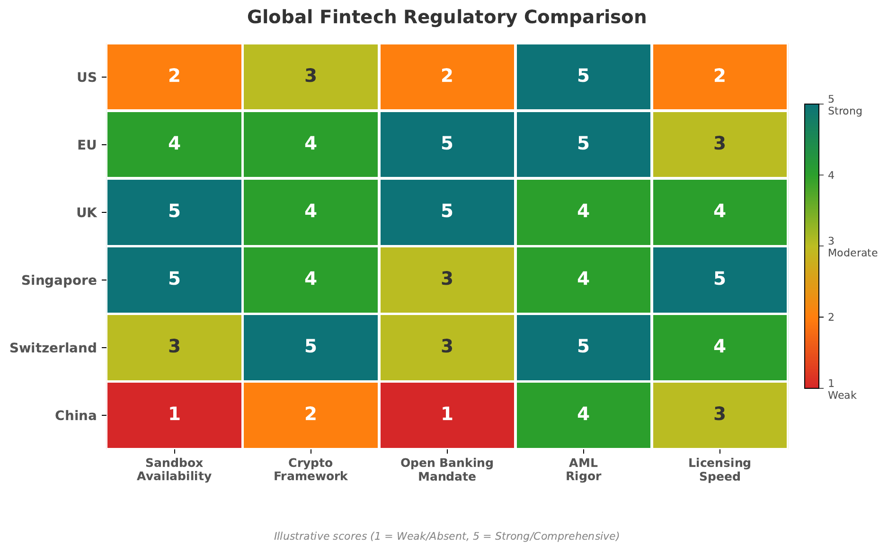
EU: Markets in Crypto-Assets Regulation (MiCA)
The European Union's MiCA regulation, which took full effect in December 2024, represents the world's most comprehensive unified framework for digital asset regulation. MiCA creates a single passport system — a firm authorized in any EU member state can operate across the entire bloc. Key provisions include:
- Asset classification — Three categories: asset-referenced tokens (ARTs), e-money tokens (EMTs), and other crypto-assets, each with specific requirements
- Stablecoin rules — Issuers of ARTs and EMTs must maintain reserves, undergo regular audits, and limit issuance if not denominated in euros (to protect monetary sovereignty)
- CASP licensing — Crypto-Asset Service Providers must obtain authorization, implement AML controls, and maintain capital requirements
- Market abuse — Insider trading and market manipulation rules extended to crypto-asset markets
- Consumer protection — White paper disclosure requirements, right of withdrawal, and liability frameworks
UK: The FCA Innovation Approach
The UK FCA has positioned itself as the global leader in innovation-friendly regulation through three interconnected programs: the Regulatory Sandbox (controlled testing environment), Innovation Hub (direct regulatory guidance for new entrants), and TechSprints (hackathon-style collaborations between regulators and industry). Post-Brexit, the UK has diverged from EU rules, offering a distinct regulatory regime that attracts firms seeking an alternative to MiCA's comprehensive but prescriptive framework.
Singapore: MAS Licensing Framework
The Monetary Authority of Singapore (MAS) operates a unified regulatory model where a single entity supervises banks, insurance, securities, and payments. For fintech, MAS offers tiered licensing under the Payment Services Act (PSA) 2019:
| License Type | Scope | Capital Requirement |
|---|---|---|
| Money-Changing | Physical currency exchange only | SGD 100,000 |
| Standard Payment Institution | Any payment service below specified thresholds | SGD 100,000 |
| Major Payment Institution | Payment services above thresholds; broader obligations | SGD 250,000 |
Regulatory Arbitrage
Regulatory arbitrage occurs when firms structure their operations to take advantage of differences in regulatory requirements across jurisdictions. In fintech, this manifests in several ways: locating in permissive jurisdictions (Dubai, Bahamas) to avoid stricter compliance; using shell structures to access markets without full licensing; or timing market entry to pre-empt regulatory frameworks (launching before rules are written). While legal, regulatory arbitrage raises important questions about consumer protection, systemic risk, and the effectiveness of national regulation in a borderless digital economy.
Singapore, the UK, Switzerland, and the UAE are actively competing to attract fintech firms through favorable regulation. Consider the following tensions:
- Does regulatory competition improve quality (as jurisdictions refine their approaches) or erode standards (as they lower bars to attract firms)?
- Should cross-border fintech firms be regulated by their home jurisdiction, their customers' jurisdiction, or both?
- How should international coordination bodies (FATF, FSB, IOSCO) balance harmonization with respect for national sovereignty?
RegTech Solutions
Frames 25–29 · Compliance Automation, NLP, Surveillance, RegTech StackRegTech (regulatory technology) refers to the use of technology — particularly cloud computing, artificial intelligence, natural language processing, and distributed ledgers — to solve regulatory and compliance challenges more efficiently, accurately, and at lower cost than traditional manual approaches. The global RegTech market was valued at approximately USD 12 billion in 2023 and is projected to exceed USD 45 billion by 2028, driven by rising regulatory complexity and the escalating cost of compliance failures.
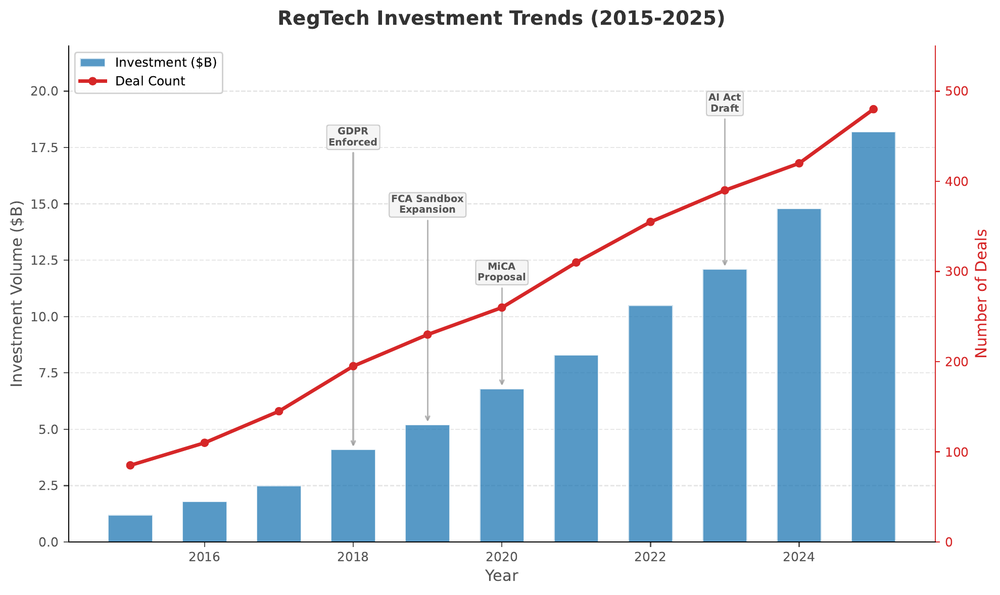
The RegTech Stack
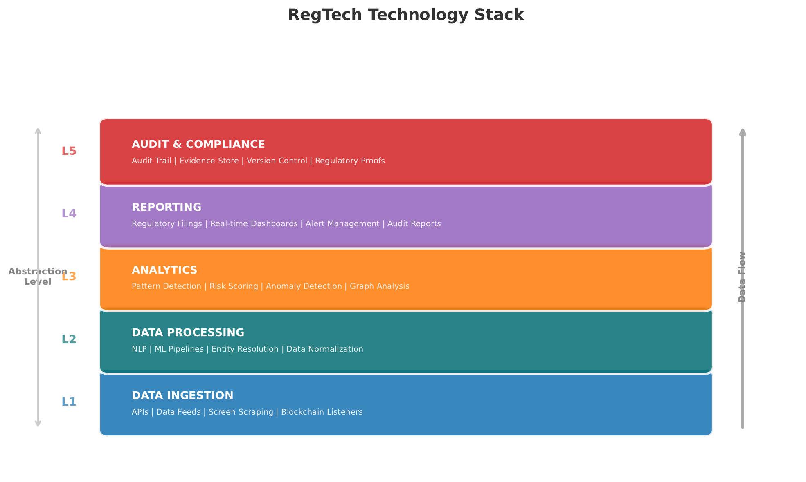
| Layer | Function | Key Technologies |
|---|---|---|
| Data Ingestion | Collect and normalize transaction data, customer data, market data, and regulatory feeds | APIs, event streaming (Kafka), data lakes, cloud storage |
| Identity & KYC | Customer onboarding, verification, and ongoing screening | OCR, biometrics, graph databases, sanctions/PEP APIs |
| Transaction Monitoring | Real-time surveillance for suspicious patterns | Rule engines, ML anomaly detection, network analysis |
| Regulatory Intelligence | Track, interpret, and operationalize regulatory changes | NLP, LLMs, knowledge graphs, regulatory taxonomy mapping |
| Reporting & Audit | Generate regulatory reports and maintain audit trails | Automated report generation, blockchain-based audit logs, dashboards |
NLP for Regulatory Change Management
Financial institutions must track thousands of regulatory updates annually across multiple jurisdictions. Natural language processing (NLP) models can parse regulatory documents, identify relevant changes, map them to internal policies and controls, and flag gaps requiring remediation. Large language models (LLMs) are increasingly used to:
- Classify regulatory updates by topic, jurisdiction, and affected business lines
- Extract specific obligations from lengthy regulatory texts (e.g., "firms must report within 72 hours")
- Compare new requirements against existing policies to identify compliance gaps
- Generate plain-language summaries for compliance officers and business stakeholders
Real-Time Transaction Surveillance
Modern transaction monitoring has evolved from batch-based, rule-only systems to real-time, AI-augmented surveillance platforms. The shift improves detection accuracy while reducing the false positive burden that overwhelms compliance teams:
- Static thresholds (e.g., flag transactions > USD 10,000)
- Batch processing (end-of-day)
- 95–98% false positive rate
- Easy for criminals to reverse-engineer
- Cannot detect novel patterns
- Dynamic, context-aware scoring
- Real-time or near-real-time processing
- 50–70% reduction in false positives
- Adapts to evolving criminal behavior
- Graph analytics reveal hidden networks
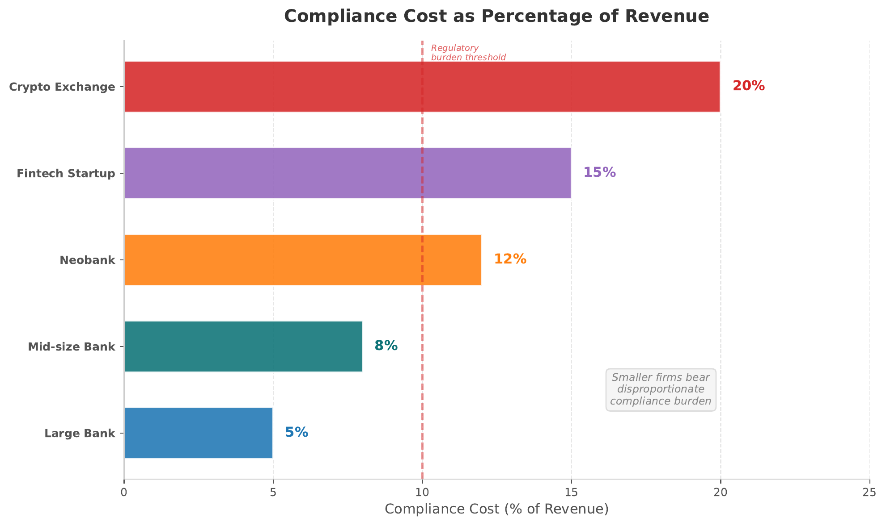
The total cost of compliance ($C_{total}$) can be decomposed into technology, personnel, and penalty components:
$C_{total} = C_{tech} + C_{personnel} + E[C_{penalty}]$
where $E[C_{penalty}]$ is the expected cost of regulatory fines. RegTech reduces $C_{tech}$ through automation and $C_{personnel}$ through AI-augmented analysis, while simultaneously reducing $E[C_{penalty}]$ through better detection. The total savings typically exceed 30% of pre-RegTech compliance budgets.
Looking Forward
Frames 30–33 · Sandboxes, Embedded Compliance, SupTech, HarmonizationThe regulatory landscape is not static. Four major trends are reshaping how financial regulation is designed, implemented, and enforced. Understanding these trends is essential for anticipating where the industry is headed — and where the next generation of regulatory challenges will emerge.
Regulatory Sandboxes Worldwide
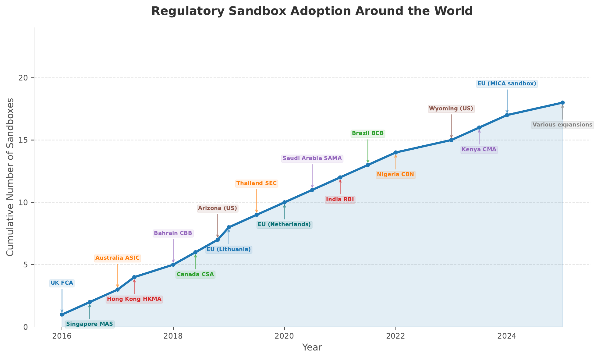
The sandbox model has proven remarkably contagious. What began as a UK FCA experiment in 2016 has spread to over 80 jurisdictions by 2025. However, not all sandboxes are created equal. The most effective sandboxes share several characteristics: clear entry criteria, genuine regulatory relief (not just guidance), time-bound testing periods, explicit graduation pathways to full licensing, and active regulator engagement throughout. Poorly designed sandboxes — "sandbox tourism" destinations where firms enter but never graduate — provide the appearance of innovation support without the substance.
Embedded Compliance: Compliance-as-a-Service
Just as embedded finance integrates financial services into non-financial platforms (Shopify offering merchant lending, Uber paying drivers instantly), embedded compliance integrates regulatory requirements directly into the technology stack. Compliance-as-a-service (CaaS) providers offer API-based solutions that enable any company to embed KYC, AML screening, sanctions checking, and regulatory reporting into its product without building compliance infrastructure from scratch.
The implications are profound: embedded compliance lowers the barrier to entry for new financial services providers, standardizes compliance quality across the ecosystem, and creates a new category of infrastructure companies (Alloy, ComplyAdvantage, Sardine) that sit between regulators and the firms they oversee.
SupTech: Supervisory Technology
While RegTech helps firms comply with regulation, SupTech (supervisory technology) helps regulators supervise firms more effectively. Central banks and financial regulators are themselves adopting AI, machine learning, and big data analytics to:
- Monitor systemic risk in real time using market data, network analysis, and stress testing models
- Detect misconduct through pattern recognition across large volumes of reported data
- Automate supervision by ingesting regulatory filings and flagging anomalies for examiner review
- Improve data quality through standardized reporting formats (e.g., XBRL) and machine-readable regulation
The frontier of SupTech is machine-readable regulation — encoding regulatory requirements in a format that can be automatically interpreted and enforced by software. Instead of publishing a 200-page rulebook that compliance teams must manually translate into internal controls, regulators would publish the same requirements as structured data or executable code. The Bank of England, De Nederlandsche Bank, and the Monetary Authority of Singapore have all run experiments in this space. If successful, machine-readable regulation would collapse the regulatory change management cycle from months to days.
Global Harmonization Efforts
International coordination bodies are working to reduce regulatory fragmentation without imposing one-size-fits-all rules:
- FATF (Financial Action Task Force) — Sets global AML/CFT standards; its "Travel Rule" requiring virtual asset service providers to share originator and beneficiary information is being implemented worldwide
- FSB (Financial Stability Board) — Coordinates regulation of systemically important financial institutions; working on stablecoin oversight and cross-border payment efficiency
- IOSCO (International Organization of Securities Commissions) — Developing standards for crypto-asset markets, including custody, market integrity, and retail investor protection
- BIS Innovation Hub — Central banks' technology laboratory; projects include cross-border CBDC bridges (mBridge) and RegTech/SupTech experimentation
Key Takeaways and Vocabulary
Frame 34 · Synthesis, Vocabulary, and Next Steps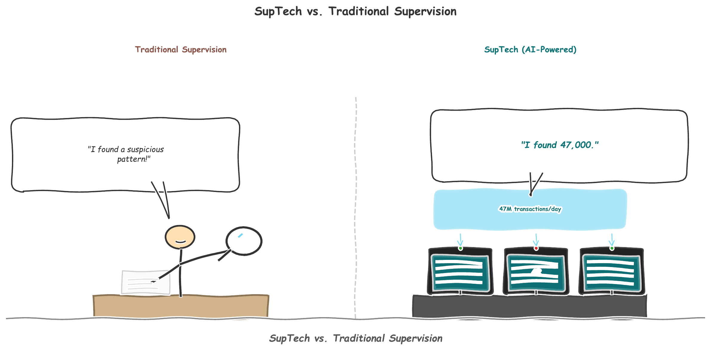
Core Takeaways from L04
- Regulation is a design parameter, not a constraint. The most successful fintechs treat compliance as a competitive advantage. Regulation shapes product design, user experience, market access, and long-term viability.
- The regulatory trilemma is real and irreducible. Stability, innovation, and consumer protection cannot all be maximized simultaneously. Every regulatory design choice involves trade-offs, and understanding those trade-offs is essential for both regulators and regulated firms.
- AML/KYC is the universal compliance layer. Regardless of jurisdiction, product type, or business model, every financial firm must implement anti-money laundering controls and know-your-customer processes. The three stages of money laundering (placement, layering, integration) define the threat model; the KYC lifecycle defines the defensive response.
- The US regulatory patchwork creates both barriers and opportunities. Overlapping federal agencies and 50-state licensing requirements make the US the most expensive market to enter — but also the largest prize. The OCC fintech charter and ongoing SEC/CFTC jurisdictional debates illustrate the structural tensions in American financial regulation.
- Global regulatory convergence is underway but incomplete. MiCA represents the gold standard for unified digital asset regulation. Singapore's tiered licensing offers a pragmatic model. The UK sandbox pioneered innovation-friendly oversight. But regulatory arbitrage remains rampant as long as significant differences exist between jurisdictions.
- RegTech is transforming compliance from cost center to competitive advantage. AI-augmented transaction monitoring, NLP-driven regulatory intelligence, and embedded compliance APIs are reducing compliance costs by 30–50% while improving detection rates. The RegTech stack is becoming as essential as the fintech product stack itself.
- The future is embedded, automated, and supervisory. Compliance-as-a-service, SupTech, machine-readable regulation, and global harmonization efforts are converging toward a world where regulatory requirements are built into technology rather than bolted on after the fact.
Vocabulary
Lecture 5: Blockchain and Decentralized Finance (DeFi) builds directly on L04's regulatory foundations by examining the technology that most challenges existing regulatory frameworks. We will explore distributed ledger architectures, smart contracts, DeFi protocols, and the governance questions that arise when financial services operate without central intermediaries. The AML/KYC and regulatory concepts introduced here will be essential for evaluating DeFi's regulatory challenges.